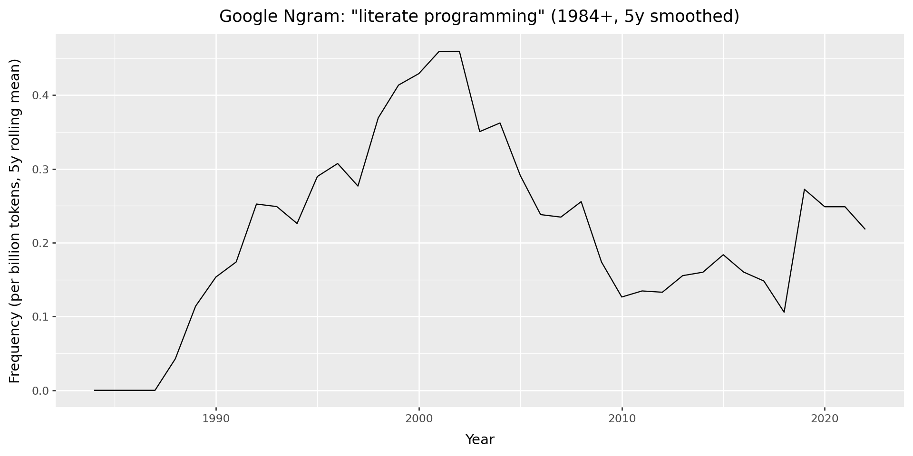

In Praise of Documentation
Overview
How I learned to love documentation
The perils of poor documentation
Why document your code
Types of documentatin
Literate programming
Scientific publishing tools
Computer programs as literature
Documentation in the age of AI
How I learned to love documentation


The perils of poor documentation

Why document your code
“Documentation is an often overlooked aspect of data science. It’s commonly left until the end of a project, but then you’re excited to move on to a new project, and the documentation is rushed or omitted completely. However, … documentation is a crucial part of making your code reproducible. If you want other people to use your code, or if you want to come back to your code in the future, it needs good documentation. It’s impossible to remember all your thoughts from when you originally wrote the code or initially carried out the experiments, so they need to be recorded.” (Nelson 2024)
Types of documentation
“Names: Names of variables, functions, and files should be informative, an appropriate length, and easy to read.
Comments: Your comments should add extra information not contained in the code, such as a summary or a caveat.
Docstrings: Your functions should always have a docstring that describes the inputs and outputs of the function, as well as the purpose of that function.
READMEs: Every repository or project should have an introduction that advertises your code and lets other people know why they should use it.
Experiment tracking: Experiments, especially in machine learning projects, should be tracked in a structured way.”
Jupyter notebooks: Your notebooks will be much easier to read if you give them good names, give them a structure, and intersperse text and code.
Nelson (2024)
Literate programming
A document formatting language
A programming language
Knuth (1984)
History of literate programming
WEB system:
A document formatting language (TeX)
A programming language (PASCAL)
Knuth (1984)
History of literate programming (cont.)
History of literate programming (cont.)
| Google Ngram: "literate programming" | |||||
| Decade patterns (1984–2019), per-billion tokens | |||||
| Decade | Trend (yearly) | Mean | Max | Max year | Years |
|---|---|---|---|---|---|
| 1980s | 0.095 | 0.357 | 1989 | 6 | |
| 1990s | 0.320 | 0.659 | 1998 | 10 | |
| 2000s | 0.268 | 0.594 | 2000 | 10 | |
| 2010s | 0.216 | 0.970 | 2019 | 10 | |
Google Ngram table for literate programming (1984+, 5y smoothed)
Scientific publishing tools
Jupyter and Marimo notebooks
R Markdown and Quarto
---
title: "In Praise of Documentation: Tools, Tips & Techniques for Literate Programming in the AI Age"
date: "2026-03-01"
categories: [documentation, talks]
format:
html:
toc: true
code-fold: true
jupyter: pydata
bibliography: refs.bib
---Computer programs as literature
“I believe that the time is ripe for significantly better documentation of programs, and that we can best achieve this by considering programs to be works of literature”
“Let us change our traditional attitude to the construction of progams. Instead of imagining that our main task is to instruct a computer what to do, let us concentrate rather on explaining to human beings what we want a computer to do”.
“The practitioner of literate programming can be regarded as an essayist, whose main concern is with exposition and excellence of style. Such an author, with thesaurus in hand, chooses the names of variables carefully and explains what each variable means. He or she strives for a program that is comprehensible because its concepts have been introduced in an order that is best for human understanding, using a mixture of formal and informal methods that reinforce each other”.
Knuth (1984)
Rules for good writing
Documentation in the age of AI
Benefits of writing good documentation
Feel good about ourselves, be appreciated by others, whilst also making the world a better place
Preserve institutional and personal memory
Ensure scientific reproducibility
Allow better version control, so software is robust
Enable responsible stewardship of technical systems, to allow future maintenance
Concluding remarks
Recommended Resources
To read a longer version of this talk, visit the blog @ carecodeconnect.io
Diátaxis: documentation framework
Write the Docs: best practices for creating software documentation and technical writing.
Gazzard, A. 2016. Now the Chips Are down: The BBC Micro. The MIT Press.
Knuth, D. E. 1984. “Literate Programming.” The Computer Journal 27 (2): 97–111. https://doi.org/10.1093/comjnl/27.2.97.
Nelson, C. 2024. Software Engineering for Data Scientists: From Notebooks to Scalable Systems. O’Reilly.